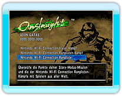
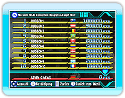

19 |
Nintendo Wi-Fi Connection-Rangliste |
 |
|
Ergebnisse der Story Modus Missionen und von dem Nintendo Wi-Fi Connection Ranglistenkampf werden in der Nintendo Wi-Fi Connection Rangliste registriert,
damit Spieler aus aller Welt um die Höchstpunktzahl konkurrieren können.
Es gibt 3 verschiedende Arten von Ranglisten: Welt, Region und Freunde. Ranglisten sind dazu da, Ranglisten von Spielern weltweit und die eigene Punktzahl zu betrachten. *Um dich für die Nintendo Wi-Fi Connection-Rangliste zu registrieren, musst du zuerst eine Speicherdatei erstellen.
Wenn in „Nintendo Wi-Fi Connection“ „Nintendo
Wi-Fi Connection-Rangliste“ ausgewählt wird, werden die Ergebnisse automatisch bei den *Es kann in einzelnen Fällen vorkommen, dass die Nintendo Wi-Fi Connection Rangliste nicht aktualisiert werden können.

In
*Es kann in einzelnen Fällen vorkommen, dass die Nintendo Wi-Fi Connection Rangliste nicht aktualisiert werden können. *Beim Anzeigen der Nintendo Wi-Fi Connection Rangliste, kann es in einzelnen Fällen zu Verzögerungen kommen.
|
 |
 |
 |